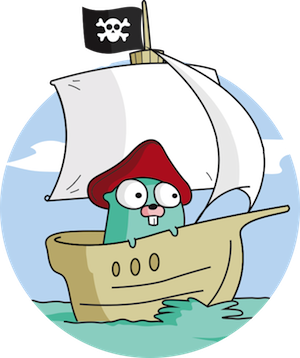

Introdução a linguagem GO
 É melhor ser um pirata do que entrar para a marinhaSteve Jobs
Luiz Alexandre
github.com/luizalexandrew / fb.com/luizalexandrew

Objetivo do minicurso
- História
- Motivos
- Por que utilizar?
- Quem utiliza?
- Caracteristicas
- Preparação do ambiente de desenvolvimento
- Código
Gopher

História
Go é uma linguagem de programação de código aberto criada como um experimento da Google pelos engenheiros Robert Griesemer, Rob Pike e Ken Thompson.
Foi lançada em 2009, hoje está na versão 1.7.3 e possuí implementação para para Linux, Windows, MacOS e FreeBSD.
Motivação?
Diz a lenda que a linguagem GO foi idealizada após um build longo de um projeto em C++ que demorava em média 45 minutos para ser executado.
A linguagem GO aborda o seguintes dificuldades no desenvolvimento de software.
- Builds lentos
- Gerência de dependências
- Custo de manutenção
- Entendimento do código fonte
Os autores citam o desgosto pela complexidade de C++ como a principal motivação para a criãção da linguagem.
Linguagens atuais
Compilação e execução eficiente
X
Programação fácil e ágil
- Escalável em grandes projetos
- Rápida (GO!!!)
- Produtiva e de fácil leitura
- Custo de manutenção
- Builds rápidos
- Melhor gerenciamento de dependências
- Programação paralela

Por que utilizar?
- Performance comparavél com C e C++
- Concorrência é um dos pontos mais fortes da linguagem
- Custo de manutenção
- Compilação rápida
- Go é incrivelmente ‘leve’ em termos de uso de memória. Existe um caso conhecido de uma companhia que rodava um serviço em Ruby utilizando 30 servidores e foram para 2 com Go. Leia mais
Algumas caracteristicas
- Compilada
- Garbage-collected
- Go Runtime
- Sintaxe simples
- Multiplataforma
- Concorrente
- Funções com múltiplos retornos
- Funções de primeira classe
- Ponteiros
- Compilada
- Garbage-collected
- Go Runtime
- Sintaxe simples
- Multiplataforma
- Concorrente
- Funções com múltiplos retornos
- Funções de primeira classe
- Ponteiros
Algumas caracteristicas não vistas em GO
- Tratamento de erro
- Herança
- Sobrecarga de métodos
- Generics
Quem está utilizando GO?
- Google :D
- Docker
- Uber
- OpenShift
- Dropbox
Então GO!
Instalar e começar
Site oficial da linguagem GOAtom
atom.iosudo dnf install ./atom.rmp
sudo pkcan install libXScrnSaver
apm install --packages-file packages.list
Hello World no GO